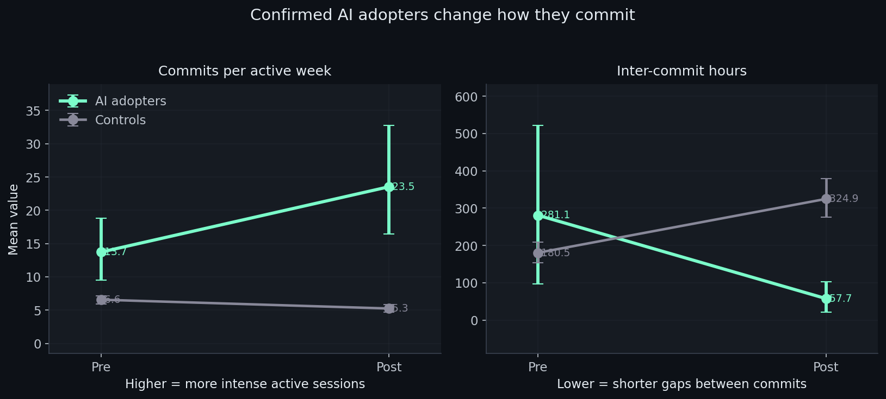
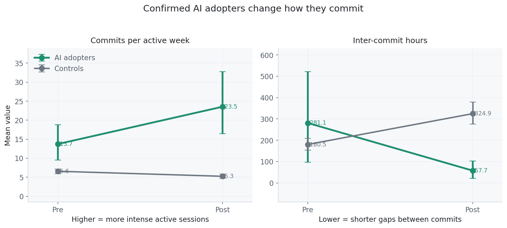
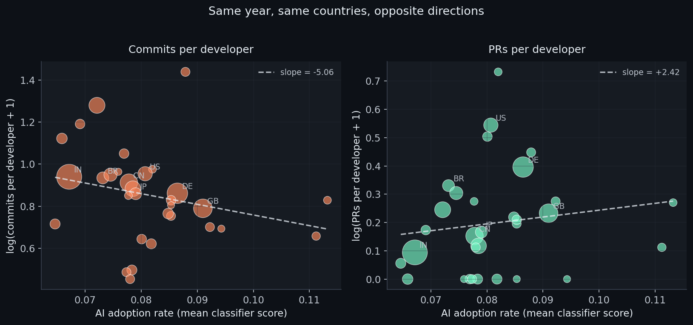
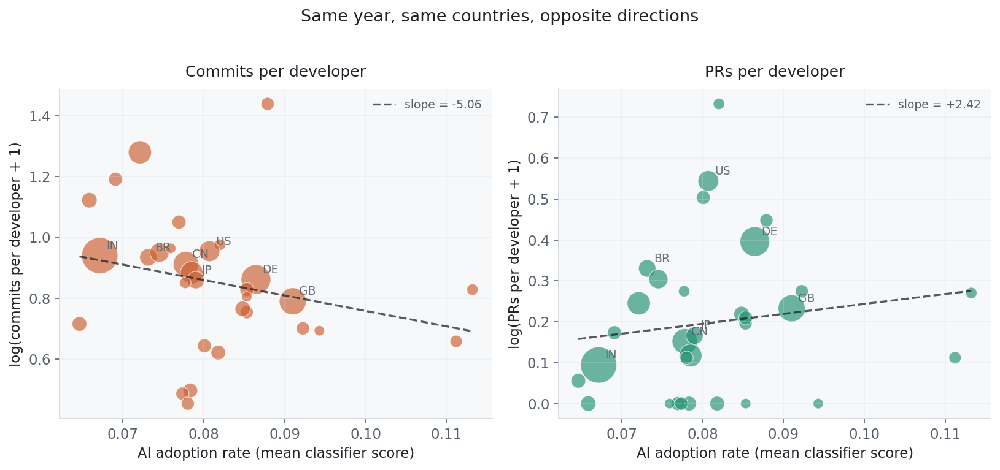
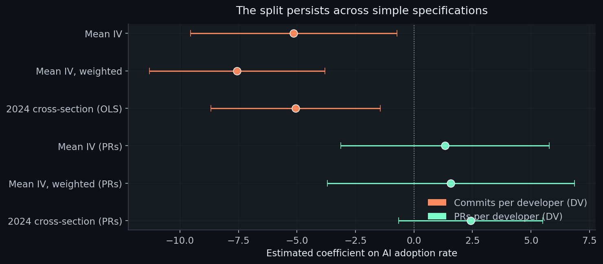
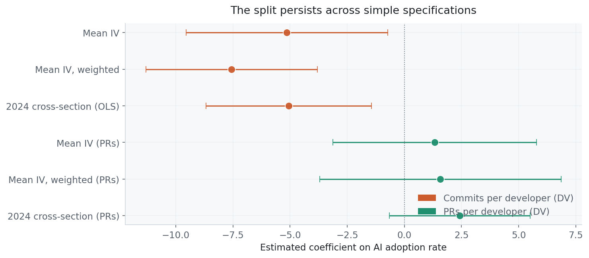

I have been vibe coding a lot. Like, a lot a lot…. and it’s been leaving me feeling a bit conflicted. I’ve been committing hard, and feeling tremendously productive. But I also get this weird flash of existential dread when I catch myself furiously hitting AGAIN AGAIN AGAIN like I’m 3 Mai Tais deep at a Vegas slot machine, until I suddenly find myself staring at a codebase I’ve never seen, like some groggy father waking up from a thirty year coma to kids he barely recognises.
I feel like a goddamn engineering hero. But am I?
The research has left me confused, and a teeny bit sceptical. The big daddy of AI coding research, METR found that AI tools can slow experienced developers down on mature codebases… but those are experienced programmers working on codebases they know, which is obviously nothing like me. Then Answer.AI published their analysis, showing that despite all the excitement, PyPI productivity really did not seem to be shifting much… and that one threw me for a spin. I am coding more. I am releasing more stuff. So what the hell is going on?
So I thought I’d check the obvious source of truth on what we are all actually doing: GitHub. I scraped an awful lot of code, and looked for how people who use AI coding tools differ.
Here’s my working theory: AI really is making me commit hard. In fact, it has me committing furiously, more frequently, and in tighter bursts. But that does not necessarily mean I am producing more. It may mean AI is changing how I work, in a way that is extremely seductive. It is a a sneaky little trap, and I worry I’ve fallen head first into it.
So I tried to figure out what makes coders who use AI different. Do they code longer? Do they commit more? Do they work in tighter bursts?
It turns out the pattern is not just “more commits” or “less commits”. It is a rhythm change. AI adopters move toward more concentrated coding sessions: more commits per active week, shorter gaps between commits, but fewer active weeks overall.


I don’t think this means we are automatically more productive. I think we are working differently, and that difference is tricking our brains.
Picking out the vibe coders
To study this at scale, I built a classifier that assigns each GitHub account a rough probability of AI coding-tool adoption from public behavioural signals.
The training sample is 276 GitHub accounts: 74 confirmed AI adopters, identified through CLAUDE.md files or Co-Authored-By: Claude trailers, and 202 controls with active commit histories before and after late 2023 and no AI markers. The classifier uses 43 behavioural features: commit cadence, message length and structure, PR body patterns, and inter-commit timing. It explicitly excludes the labelling artefacts themselves.
The random forest model I ended up with correctly identifies the right outcome around 94% of the time. Remove all markers from the content (so it’s working purely from patterns of activity) and it still gets it right about 91% of the time.
Thankfully, Claude Code is not the only tool that leaves obvious traces. Aider does too. When I run the classifier on Aider users, a tool it was never trained on, it flags them as AI-tool users 73% of the time, compared to just 3% for people not using any AI coding tools.
So whatever the classifier is detecting, it is not just Claude-specific style. It looks like a broader “this developer’s behaviour looks AI-assisted” signal.
If you want the methodology in detail, the paper is here. For this post, the key point is simpler: I can assign an approximate AI-adoption score to public GitHub accounts, then ask whether higher adoption lines up with different activity metrics.
So what about countries?
So, we know at an individual level that AI users seem to work differently. But what about entire countries? If all of China has indeed gone OpenClaw-crazy, are they pushing endless agentic products? I was hoping this might give me a signal about what was going on.
It turns out it is just as puzzling.
With per-account AI scores in hand, I aggregated them by country. Take the 4,824 scored accounts, group them by country, and use the mean classifier score as a country-level AI adoption measure.
This is the weaker part of the analysis, and I want to be upfront about that. Country-level GitHub Archive data is noisy. The 2024 cross-section is thin. The adoption measure inherits whatever biases the classifier has. So I do not read this as clean evidence that AI adoption causes country-level productivity changes.
I read it as a warning sign about measurement.
For the dependent variables, I used a GitHub Archive panel from 2022 to 2024 with two common activity measures: commits per active developer and pull requests per active developer. If both were clean productivity metrics, you would expect them to broadly tell the same story.
They do not.


On the left: commits per developer in 2024, plotted against the country’s mean classifier-derived AI adoption score. Higher adoption, lower commits. The slope tilts down.
On the right: pull requests per developer, same countries, same year, same adoption measure. The slope is slightly positive and statistically indistinguishable from zero.
Same countries. Same year. Same adoption measure. Different activity metric, different story.
That is the point. I do not think the country result is strong enough to carry a claim about national productivity. But it is exactly what you would expect to see if commit counts are partly measuring workflow granularity rather than output.


The PR plot twist
So here is the bit that made me sit up.
The commit stuff measures workflow tempo: how often you hit save, how long you wait between commits, how chatty your messages are. That is interesting, but it is not the same as shipping work. To check that, I collected authored pull requests for the full classifier cohort and re-ran the before/after comparison using PR-specific outcomes.
Coverage. Of 276 accounts (74 treated, 202 controls), 275 had retrievable PR data. The treated group is more PR-active overall: 58 of 73 had at least one authored PR, versus 160 of 202 controls. But 15 treated accounts had zero PRs, and 13 hit the 300-PR retrieval cap. So the picture is mixed.
The volume story is strong. Confirmed adopters open +46.4 more PRs post-adoption and merge +42.6 more. On a per-month basis, that is +1.64 opened and +1.51 merged. All four numbers are significant at p < 0.001 and survive FDR correction across ten PR outcome tests. The effect also survives dropping capped accounts, dropping zero-PR accounts, and restricting to the highest-confidence adopters.
The rate story is messier. Merge rate rises by about 0.16 (p = 0.004), and median hours-to-merge falls by roughly 18.5 hours (p = 0.034). But when I restrict to accounts with PRs in both windows, the merge-rate effect collapses to basically nothing (+0.03, p = 0.39) while the volume effects stay significant.
What is happening? When an account had zero PRs in the pre-period, merge rate and merge time are mechanically set to zero. That artificially inflates the post-period gain. So I treat PR volume as the primary signal and merge rate as secondary, at best.
What this means for the puzzle. The country-level panel found PRs per developer effectively flat. The account-level extension finds confirmed adopters opening and merging substantially more PRs. The apparent contradiction is not a contradiction. It is a scale mismatch.
At the country level, the treatment is a small adoption share diluted across every developer in the country. At the account level, the treatment is confirmed adoption compared with confirmed non-adoption. A +46 PR effect among 10-15% of developers is invisible when averaged across the other 85-90%. The country panel tells us aggregate PR rates do not rise with aggregate adoption. The account panel tells us the adopters themselves are shipping more packaged work. Both are true once you distinguish average effects from average treatment effects on the treated.
So, does any of this make sense?
So, you’re confused. I am too. But I think I can make some educated guesses about what is going on here.
AI tooling changes how you work, and probably how much you ship too
The PR outcome analysis complicates the story in a useful way. Commit counts may be a bad proxy for productivity, but the adopters themselves are opening and merging substantially more pull requests. That is not a workflow artefact. That is accepted packaged work.
The question is not whether AI tools increase output. At the individual level, the evidence points toward more shipped work. The question is whether our old metrics can see it, and whether aggregate data can pick up a concentrated effect among a small treated share.
This might just be because we are looking at individuals. Maybe the truly transformative agentic organisation is already happening somewhere else, higher up the stack, in workflows that GitHub commits will never capture properly.
But beware the siren temptress of Claude Code YOLO. No matter her dulcet singing tones, you are not necessarily the hot-shit programmer she is making you out to be.
The behavioural evidence says something subtler: AI users work in a different rhythm. More concentrated bursts. Shorter gaps between commits. Fewer active weeks. That can feel like momentum, and maybe sometimes it is. But it can also make the old metrics lie.
Agentic coders really are built different
The classifier may be picking up something other than AI adoption. A pre-period placebo test on the training data showed that 6 of 8 features differ significantly between confirmed AI adopters and controls before AI tools existed in their current form. The classifier captures some combination of “uses AI tools” and “is the sort of person who does vibe coding”.
I think these might just be very different populations.
Some developers might commit less frequently per unit of work for reasons that have nothing to do with AI. Some may be more delib…
So, here we are.
I should add: there is loads of stuff I am not sure of. This is a noisy, self-selective, observational analysis. The data is far from ideal, and generalising from Claude Code to Aider may tell me diddly squat about agentic coding more broadly. But I kind of think it does tell us something.
Claude Code might be making us feel like heroes. I am not actually sure that it is making individual programmers push out features any faster. It sure feels like it though, and that is one damn appealing trap to fall into.
The PR evidence shifts the picture: AI adopters are shipping more accepted packaged work, even if commit counts are a lousy way to measure it. More controlled experiments on CI success, issue resolution, and feature ship time would still be valuable, but the observational signal is stronger than the commit data alone suggested.
If you have seen this commits/PRs split in your own data, I would like to compare notes. The repo for the analysis is here on GitHub, and the formal paper version lives over here.
An awful lot of the analysis for this work was done by my Hermes Agent. I’m mostly confident, but also, if I’ve cocked it up, I’m very sorry.